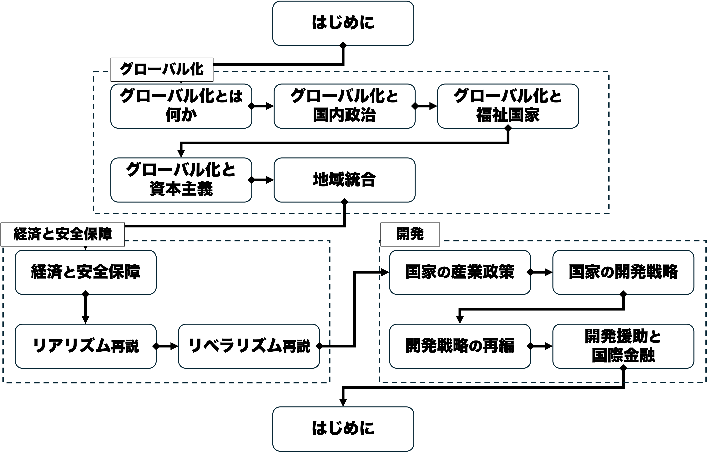

シラバス
授業概要
グローバル化が進む現代、政治と経済とはますます強く結びついており、両者を分けて考えることはもはや不可能です。この科目では、そうした政治と経済の関わりについて、国際関係論の視点から考察できる能力を身につけることを目的としています。国際政治経済学の研究成果から関連する概念・理論・モデルを学び、越境する経済活動をめぐって繰り広げられる国際政治について、「印象」ではなく「根拠」に基づいて分析できる視座を提供していきます。特に第二学期の「国際政治経済I」では、第一学期で学んだことを前提に、グローバル化／地域統合や安全保障、開発といったトピックを各論的に扱います。授業では適宜アクティブラーニングを取り入れ、お互いに学び合いながら知識の習得を深めるとともに、学んだ知識を応用しながら国際政治経済を考察する経験を積めるよう手助けをしていきます。
キーワード：国際政治経済、国際関係論、グローバル化／地域統合、経済と安全保障、開発戦略と開発援助
目的と到達目標
本科目では、越境する経済活動をめぐって繰り広げられる国際政治について、理論的実証的に考察できる能力を身につけることを目指します。特に第二学期の「国際政治経済I」では、第一学期で学んだことを前提に、グローバル化／地域統合や安全保障、開発といったトピックを各論的に扱います。本科目を履修することで、具体的には以下の目標の達成が期待できます。
- 学問領域としての国際政治経済学を説明できる。
- グローバル化や地域統合が各国の政治や福祉、経済運営などに与える影響について、さまざまな立場の議論を挙げ、比較検討できる。
- 経済と安全保障との関係について、リアリズムおよびリベラリズムそれぞれに則った代表的な理論を挙げ、説明できる。
- 国家が経済成長を達成するために採用してきたさまざまな戦略について、その実態を説明し、理論的に考察できる。
- グループワークを通じて、他者と協働しながら自らの意見を論理的に表現し、建設的な議論に貢献できる。
授業内容
| タイトル | 日付 | 目的／概要 |
|---|---|---|
| 01/はじめに | 9月21日 | 本科目の目的・計画・評価方法・諸注意を紹介し、前期「国際政治経済I」で学んだことを思い出すとともに、今学期「国際政治経済II」の目的と内容を知り、受講の意図を明確にもつ。 |
| 02/グローバル化とは何か | 9月28日 | 抽象的な概念を定義し測定する方法を学んだ上で、国際政治経済学上の重要な概念である「グローバル化」で応用する。データに基づいてグローバル化の現状を議論する。 |
| 03/グローバル化と国内政治 | 10月5日 | グローバル化が国内政治経済に与える影響について収斂仮説を学ぶとともに、ヘクシャー＝オリーンモデルに基づいて収斂仮説を批判的に検討する。 |
| 04/グローバル化と福祉国家 | 10月12日 | 戦後の福祉国家のあり方について「埋め込まれた自由主義」と「福祉国家の多様性」の議論を復習／学習するとともに、グローバル化が福祉国家に与える影響を検討する。 |
| 05/グローバル化と資本主義 | 10月19日 | 各国の資本主義のあり方の違いについて、「コーポラティズム論」と「資本主義の多様性論」を学ぶとともに、グローバル化が資本主義に与える影響を検討する。 |
| 06/地域統合 | 10月26日 | 地域統合とは何か、その概念と現状を知るとともに、地域統合が最も進んだ例である欧州連合について学ぶ。欧州統合を機能主義の流れの中に位置付け、それに対する反発である欧州懐疑論の論理を理解する。 |
| 07/経済と安全保障 | 11月9日 | 経済と安全保障の関係について、国際関係論の歴史的展開を踏まえた上で、エコノミック・ステートクラフト、「経済安全保障」、経済制裁の3つのパターンに着目して学ぶ。 |
| 08/リアリズム再説 | 11月16日 | リアリズムの考え方について前期で学んだことを復習するとともに、新たな考え方として相対的利益論とセキュリティ外部性論を学ぶ。 |
| 09/リベラリズム再説 | 11月23日 | リベラリズムの考え方について前期で学んだことを復習するとともに、新たな考え方として民主的平和論と商業的平和論を学ぶ。 |
| 10/国家の産業政策 | 11月30日 | 国家が経済成長を目指すために行う産業政策について、その理論的背景となる幼稚産業保護論と戦略的貿易理論を学ぶとともに、産業政策の成否と国内政治の関係を考察する。 |
| 11/国家の開発戦略 | 12月7日 | 開発途上国と呼ばれる国々の現況を知り、これらの国々が経済発展を遂げるための理論的根拠である構造主義理論と、それに基づいた政策である輸入代替工業化を学ぶ。 |
| 12/開発戦略の再編 | 12月14日 | 輸入代替工業化とはどのような政策か復習した上で、1980年代以降の行き詰まりの理由を学ぶ。この時期に台頭した東アジア諸国の発展モデルを概観し、その後の開発戦略をめぐる展開と議論を知る。 |
| 13/開発援助と国際金融 | 12月21日 | 経済発展における国際金融の役割を経済学的に位置付けた上で、国際金融の重要な2つの経路として民間資金と政府開発援助を学ぶ。また、戦後における開発金融の歴史的展開を概観する。 |
グラフィックシラバス

授業計画コメント
シラバスは暫定的なものであり、今後変更の可能性があります。変更があった場合、最新版をMoodleにアップロードしますので、適宜確認してください。
授業方法
- 本科目は基本的には講義方式を採用し、担当者が作成したスライドに基づいて進行します。資料はMoodleで共有します。
- 毎回授業後、Moodleのアンケート機能を利用したリアクションペーパーの記入を求めます（合計200字程度）。締め切りは3〜4日後程度を予定しています。
- 授業では適宜アクティブラーニングを取り入れます。この方法により、お互いに学び合いながら知識の習得を深めるとともに、学んだ知識を応用しながら国際政治経済を考察する経験を積めるよう手助けをしていきます。
使用言語
日本語
準備学習
予習よりは復習を重視します。Moodle上のアンケート機能で設定されたリアクションペーパーに毎回回答するとともに、講義資料を再確認して復習してください（1〜2時間程度）。なお授業全体および各回授業で設定されている到達目標がそのまま評価項目となるようにしていますので、復習の際の指針としてください。
成績評価の方法・基準
- 期末試験（70%）…（到達目標2-5）学期末試験を実施します。授業の内容全般についての理解度を評価します。
- 平常点（30%）…（到達目標1, 6）各回のリアクションペーパーの提出を評価します。
成績評価コメント
期末試験では授業全体および各回授業で設定されている到達目標が達成できているかどうかを測ります。自分で目標の達成ができているかどうか考えながら復習に臨んでください。
課題等（試験やレポート等）に対するフィードバック
前回のリアクションペーパーの回答に対して各回授業の冒頭で返答する予定です。
教科書
教科書は指定しません。
参考書
下記は担当者が主に参照したものです。購入の必要はありませんが、興味があれば手に取ることをすすめます。
- 飯田啓輔（2007）『国際政治経済』東京大学出版会．
- 河野勝・竹中治堅編（2003）『アクセス国際政治経済論』日本経済評論社．
- 野林健・大芝亮・納家政嗣・山田敦・長尾悟（2007）『国際政治経済学・入門［第３版］』有斐閣．
- 田所昌幸（2008）『国際政治経済学』名古屋大学出版会．
- Oatley, Thomas. (2019). International Political Economy. London: Routledge.
履修上の注意
本科目は主に政治学・国際関係論の基礎をすでに学んでいる3年生以上の学生を対象として想定しています。また、本科目は第1学期の「国際政治経済I」の履修を前提としています。ただし、政治学・国際関係論に関心があれば1〜2年生、また「国際政治経済I・II」の未履修者の受講も歓迎します。